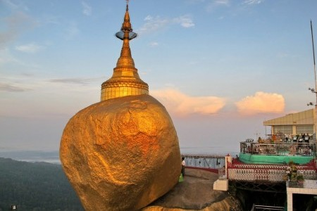

Kyaik Htee Yoe
.jpg)
Kyaiktiyo
Pagoda
also known as Golden Rock) is a well-known Buddhist pilgrimage site in Mon State, Burma. It is a small pagoda (7.3 metres (24 ft)) built on the top of a granite boulder covered with gold leaves pasted on by its male devotees.
According to legend, the Golden Rock itself is precariously perched on a strand of the Buddha's hair. The balancing rock seems to defy gravity, as it perpetually appears to be on the verge of rolling down the hill. The rock and the pagoda are at the top of Mt. Kyaiktiyo. Another legend states that a Buddhist priest impressed the celestial king with his asceticism and the celestial king used his supernatural powers to carry the rock to its current place, specifically choosing the rock as the resemblance to the monks head. It is the third most important Buddhist pilgrimage site in Burma after the ShwedagonPagodaand the Mahamuni Pagoda.
Currently, women are not allowed into the inner sanctuary of the rocks vicinity, maintained by an employed security guard who watches over the gated entrance. Women are permitted in the outer balcony and the lower courtyard of the rock.
In the Mon language, the word 'kyaik'
means "pagoda" and 'yo'
means "to carry on the hermit's head". The word 'ithi'
in Mon
means "hermit". Thus, 'Kyaik-htiyo' means "pagoda upon a hermit's head". The legend associated with the pagoda is that the Buddha, on one of his many visits, gave a strand of his hair to TaikTha, a hermit. The hermit, who had tucked it in the tuft of his hair safely, in turn gave the strand to the king, with the wish that the hair be enshrined in a boulder shaped like the hermit's head. The king had inherited supernatural powers from his father Zawgyi, a proficient alchemist), and his mother, a naga serpent dragon princess. They found the rock at the bottom of the sea. With the help of the Thagyamin, the king of Tawadeintha Heaven in Buddhist cosmology, found the perfect place at Kyaiktiyo for locating the golden rock and built a pagoda, where the strand was enshrined. It is this strand of hair that, according to the legend, prevents the rock from tumbling down the hill. The boat, which was used to transport the rock, turned into a stone.
The pagoda is located near Kyaikto in Mon State in the northern part of the Tenasserimcoast. The Golden Rock is situated at an elevation of 1,100 m (3,609 ft) above mean sea level, on top of the Kyaiktiyo hill (also known as Kelasa hills or Eastern Yoma mountains); it is on the Paung-laung ridge of the Eastern Yoma mountains. It is at a distance of 210 kilometres (130 mi) from Yangon and 140 kilometers (86 mi) north of Mawlamyine, the capital of Mon State. The Kinpun village 16 km (10 mi) is at the base of Mt. Kyaiktiyo. It is the closest to the Kyaiktiyo Pagoda. From Kyaiktiyo, the foot trail or road starts for the Golden rock. On this approach, there are numerous granite boulders on the mountain, perched in precarious condition. Near the top of the mountain, there are two large lions guarding the entrance to Kyaiktiyo Pagoda. From this location, known as Yatetaung (the last point for vehicular traffic), pilgrims and visitors have to climb to the Golden Rock barefoot, after leaving their footwear behind, as per Burmese custom. The paved mountain track, built in 1999, from the bus terminal at Yatetaung, is along a dusty section with kiosks on both sides and the climb of 1.2 km up to the Golden Rock is stiff and takes about one hour to reach. From the base camp at Kinpun, the hiking trek to the pagoda is about 11 kilometres (6.8 mi) and many devotees do this trek as part of the pilgrimage rites.

The boulder, which gleams golden and popularly known as the Golden Rock on which the small Kyaiktiyo Pagoda has been built, is about 25 feet (7.6 m) in height and has a circumference of 50 feet (15 m). The Pagoda above the rock is about 7.3 metres (24 ft) in height. The boulder sits on a natural rock platform that appears to have been naturally formed to act as the base to build the pagoda. This granite boulder lies on an inclined plane and the area of contact is extremely small. The golden rock or boulder and the rock table on which it is resting are independent of each other; the golden rock has an overhang of half its length and is perched at the extreme end of the sloping surface of the rock. There is a sheer vertical drop in the rock face, into the valley below.
A lotus shape is painted in gold leaf, encircling the base of the rock. It appears as though the boulder will crash down at any moment. A staircase leads to the pagoda complex that houses several viewing platforms, pagodas, Buddha shrines, and nats(spirits worshipped in Burma in conjunction with Buddhism shrines). However, the Golden Rock is the main attraction for the pilgrims who offer prayers and also stick golden leaves on the rock in reverence. A short distance away, there is a circle of gongs with four statues of nats and angels in the centre.
A main square close to the golden rock has many establishments that deal in religious paraphernalia for worship and offerings made by the pilgrims. Adjoining the plaza area is the Potemkin village where restaurants, gift shops, and guest houses are located. A new terrace has been built at a lower level from which visitors can get a good view of the rock and the pagoda.

The Full Moon day of Tabaung in March, is a special occasion for pilgrims who visit the shrine. On this day, the platform of the pagoda is lighted with ninety thousand candles as reverential offering to the Lord Buddha. The devotees visiting the pagoda also offer fruits, food and incense to the Buddha.
Currently, women are not allowed into the inner sanctuary of the rocks vicinity, maintained by an employed security guard who watches over the gated entrance. Women are permitted in the outer balcony and the lower courtyard of the rock. The belief stems from the practice of women forbidden to make physical contact with male monks, who are vowed under chastity as the rock itself represents of the Buddhist monk resembling its head.
 Facebook:
Facebook:  Email:
Email:  Browser:
Browser:  Phone:
Phone:  Address:
Address: